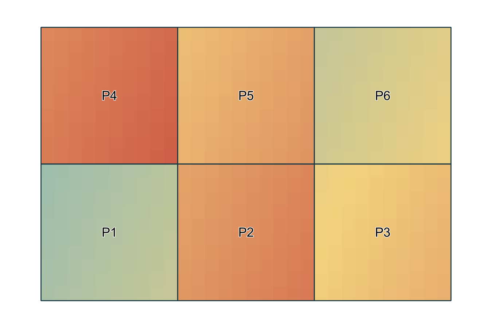

01 / AGROALIMENTACIÓN
El campo no espera.
La cooperativa solo puede visitar dos parcelas. ¿Cómo combinar estrés y producción para priorizarlas?
APRENDERÁS Estadísticas zonales
Una cooperativa. Una consulta rural. Un barrio mal conectado. Tres problemas en los que saber dónde cambia lo que podemos hacer.

01 / EL ENCARGO
Equipos de 3–4 personas. Elegid un sector.
Cada reto enseña una herramienta nueva.
La cooperativa solo puede visitar dos parcelas. ¿Cómo combinar estrés y producción para priorizarlas?
Una consulta itinerante, tres sedes posibles. ¿Cuál acercaría más citas que hoy quedan fuera de cobertura?
Dos intercambiadores y una barrera. ¿Se llega antes al más cercano en el mapa si hay que seguir las calles?
Los escenarios y las cifras son ficticios. Practicarás métodos aplicables a problemas reales; las conclusiones solo corresponden a estos datos.
02 / MANOS A QGIS
03 / CAMBIA UNA HIPÓTESIS
Prueba cómo una decisión depende del criterio.
Después, contrástalo en QGIS.
Simuladores didácticos de los mismos escenarios. No ejecutan QGIS en el navegador ni incorporan datos reales, tiempos de viaje o capacidad operativa.
04 / TU PROPUESTA AL CLIENTE
El problemaQué necesita decidir el cliente y con qué criterio.
La evidenciaUn mapa legible y dos cifras que puedas explicar.
La decisiónQué harías primero, dónde y por qué.
El siguiente datoUna limitación y la información que pedirías para aplicarlo de verdad.
05 / TODO PARA EMPEZAR
Sin cuentas, complementos ni descargas externas.
Descomprime antes de abrir el proyecto.
Un proyecto QGIS por sector, GeoPackages y el ráster agrícola. Mantén los archivos en sus carpetas para conservar las rutas.
Fichas de los tres sectores, pasos, preguntas y entrega.
AMPLIACIÓN · PDFAprende a crear una herramienta con el Modelador Gráfico.
QGIS · .MODEL3Referencia de cobertura parametrizada. Necesita capas con sol y pob; no es el modelo de citas de salud.
Contiene los resultados. Úsalo después de elaborar tu propuesta.
Abrir la guía docente de los tres sectores ↗DEL AULA AL TERRITORIO